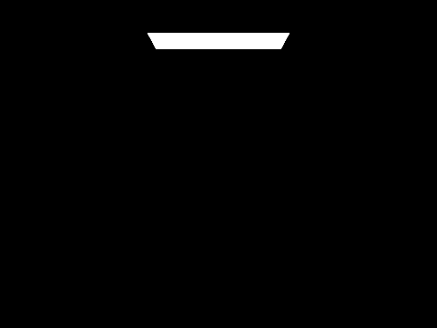

In this project, we will implement various important aspects of a
physically-based rendering program and complete various parts of the
rendering pipeline. We will start with Ray Generation and Scene
Intersection, where we will convert 2D coordinates in image space to 3D
rays in world space as well as detecting how, when, and where those rays
will intersect with objects in our scene. Next, we will implement Bounding
Volume Hierarchy, where we arrange and index our primitives in a way such
that intersection detection can be optimized. Then, we will implement
Direct Illumination, which models how light rays coming directly from
light sources interact with our scene and end up captured by the camera,
creating the foundation of our renders. Subsequently, we follow direct
illumination with indirect illumination, where we simulate how rays bounce
and reflect off an arbituary number of objects along its path, allowing us
to achieve Global Illumination and approximate how light works in the real
world. Finally, we implement Adaptive Sampling, where we optimize the
number of ray samples we need for each pixel by detecting convergence and
greatly improve our rendering efficiency.
Part 1: Ray Generation and Scene Intersection
In order to perform ray tracing, we first need to be able to generate
rays. In other words, given some (x, y) point in the 2D image
space, we want to be able to produce the corresponding
(o, d) ray in the 3D world space, by intermeidately
transitioning over the 3D camera space. As we can see below, our image in
camera space ranges from
(-tan(0.5 * hFov), -tan(0.5 * vFov), -1) to
(tan(0.5 * hFov), tan(0.5 * vFov), -1), this means that we
can conveniently convert coordinates from image space to camera space by
simply scaling the bottom left corner by the normalized image coordinates.
This works because any point on an image can be thought of as a pair of
percentages over the width and height. Now that we have the ray
originating from the camera origin and passing through the desired point
in camera space, we can simply multiply it with the camera-to-world matrix
to acquire the same ray in world space.
With the ability to generate rays for any point in image space, we now
have the basic framework for rendering output images. In other words, for
every pixel in the output image, we can n samples within the
pixel and generate n corresponding rays. Each ray will then
have a radiance, which will be approximated by our ray tracing simulation
in the later parts of this project. By averaging the radiance of each ray,
we can ultimately estimate the correct value at each pixel.
Next, we will implement more foundations for our ray tracing algorithm. In
order to simulate how light rays interact with our meshes, we must fist
have the ability to determine if they will interact at all. In other
words, given a ray and a primitive of a mesh, whether that is a triangle
or sphere, we must solve for their intersection by calculating 1. the
point along the ray's path at which the intersection occurs and 2. the
surface normal of the point of intersection.
In the case of the ray-triangle intersection, I used the Moller Trumbore
algorithm explained in lecture to solve for the point of intersection to
minimize computation. As illustrated below, given a ray specified by its
origin and direction, as well as a triangluar plane specificed by its
three vertices in 3D world space, we can calculate the "ray progression"
parameter
t, such that when multiplied with the ray direction and added
upon the ray origin gives the point of intersection, as well as its
barycentric coordinates b1, b2, and of course
b0 = 1 - b1 - b2. After calculating the necessary variables
and solving for the target parameters, I determined the surface normal
using the weighted sum of the barycentric coordinates and the normals at
each vertex. There is not much to talk about in terms of the actual coding
implmentation as it is quite straightforward except for the fact that we
need to check if the ray will intersect the triangle at all. To do this, I
checked a couple of things: 1. t is within the "valid
collision range" of the ray (i.e. t in [r.min_t, r.max_t])
and 2. the barycentric coordinates are nonnegative and sums to one.
Lastly, we also need to remember to update max_t of a ray as
we know collisions further down the line will never happen.
As for the ray-sphere intersection, I did basically the same thing,
setting up the quadratic equation as instructed in lecture, solving for
t and the surface normal of the point of collision, and
checking that a collision will occur in the first place by eliminating
imaginary solutions and invalid t ranges.
Finally, with the aforementioned features, we can now render out some
scenes. As shown below, we successfully generated rays and simulated their
intersections with both triangles and spheres. The outputed pixel colors
are shaded based on the surface normal directions of ray intersections,
proving that our calculations are correct as well. Unfortunately, there
are limitations to the complexity of the scenes we can currently generate
as the rendering time scales up very linearly with the number of
primitives in the scene, something we will attempt to optimize in the next
part.
CBempty.dae
CBspheres_lambertian.dae
CBgems.dae
banana.dae
Part 2: Bounding Volume Hierarchy
We will now improve the rendering time of our scenes by organizing our
primitives into a bounding volume hierarchy (BVH) tree. The reason why
scenes with high complexity take longer to generate is quite
straightforward - as the number of primitives in a mesh increases, both
the total number of actual ray intersections and potential ray
intersections we need to check increases as well. Therefore, it
intuitively makes a lot of sense to organize and group primitives based on
their position, so that we can avoid wasting our computation on groups
that are far from the path of the ray and collisions that we know will
never happen.
The BVH algorithm is very simple and is composed of a few basic,
foundational concepts. 1. To check if a ray will intersect with a
primitive, we can check if it will intersect with its larger group first.
2. To check if a ray will intersect with a group of primitives, we can
check if it will intersect with its bounding box, which is essentially the
smallest rectangular prism that captures every primitive in the group. 3.
To locate the group that the ray will intersect, we can store each group
in a binary tree structure and perform a bianry search very quickly (i.e.
improving O(n) -> O(log(n))). Specifically, we want to
organize our tree such that primitives closer to each other will be in the
same group. This way, when we make a decision on which path(s) to traverse
in the recursion, we can minimize the amount of spacial overlap between
the two bounding boxes and reach the leaf node (the actual primitives)
through a path that is as short as possible.
With these concepts in mind, we implement our BVH algorithm. First we will
need to construct the BVH tree. To do this, we write a recursive function,
where given the start and end pointers of the
list of primitives, as well as the max_leaf_size that
specifies the minimum number of primitives to reduce to for creating a
group, performs the following steps: 1. Initiate a BVH node. 2. Loop over
the primitives and create a bounding box for them. 3. If the number of
primitives is less than or equal to max_leaf_size, we have
reached a leaf node and can create a group. To do this, we simply assign
the start and end pointers of the node to the
given start and end parameters. 4. If we cannot
create a leaf node, we must then create a inner node. There will be a few
things we need to do: a. We must decide how to split the primitives into
two groups. In my implmentation, I chose the heurstic where I split
primitives using the mean value on the axis with the highest approximated
variance. In other words, the longest dimension of the bounding box will
be used as the axis and the mean value across all centroids of each
primitive on that axis will be used as the "split point" (e.g. if
x_coord_max - x_coord_min is the greatest across
the x, y, and z axes, the x-axis will be the split axis and
x_coord_mean will be the split point). This makes sense
intuitively as the split point limits the spatial overlap between the two
groups while the choice of the split axis keeps the bounding box of each
iteration relatively cube-shaped as it reduces the length of the longest
axis every time, reducing the likelihood of a ray intersecting with both
groups. b. Partition the primitives by the split point. I used the
std::partition function for this, which nicely rearranges the
list of primitive pointers for me and returns the pointer to the first
element of the second group. I call this pointer split. c.
Assign the left and right children of this node to the result of the
recursive call over [start, split] and
[split, end] respectively. 5. Finally, we return the node.
As shown below, we now can construct a BVH tree that partitions our
primitives quite nicely, resulting in little overlap across groups and
good spatial proximity within groups.
The BVH tree traversal algorithm is also quite straightforward. First,
similar to triangles and spheres, we need to be able to detect
intersections between a ray and a bounding box. I used the algorithm
explained in lecture where we essentially calculate the intersection
interval between the ray and the bounding box for each individual axis,
and using the three resulting axis-oriented pairs of
[min_t, max_t]s to clamp the original interval of the ray,
effectively acquiring the final intersection interval where the ray
intersects all three axes simulatenously. Next, we simply traverse the
tree, going down each path where an intersection with the bounding box
occurs. Once we reach a leaf node, we can locate the primitive with the
closest point of intersection relative to the ray origin, which will be
the correct primitive of which the ray intersects.
As shown below, these are four scenes with high complexity that would've
taken way too long (at least 4 minutes) to render without BVH but only
took a less than a second to render with BVH. There is no doubt that BVH
has significantly raised our rendering limits.
maxplanck.dae
CBlucy.dae
CBdragon.dae
peter.dae
Moreover, we can also see from the table below of how the rendering time
changes with and without the BVH optimization. The rendering times are
measured using a M1 MacBook Pro using 8 threads on 800x600 resolution.
From the relationship between the rendering times and the complexity of
the scene (i.e. primitive count), we can see that our predictions from
earlier were more or less correct. For the rendering times without BVH,
the data models a linear relationship (O(n)) with increasing
complexity whereas for with BVH, there exists a logarithmic relationship
(O(log(n))), consistent with our predictions.
scene
result
primitives count
rendering time without BVH
rendering time with BVH
cow.dae
5856
26.9670s
0.0652s
banana.dae
2458
13.4547s
0.0471s
teapot.dae
2464
12.7413s
0.0630s
beetle.dae
7558
38.3507s
0.0556s
CBcoil.dae
7884
45.7617s
0.0578s
maxplanck.dae
50801
283.8224s
0.0722s
CBlucy.dae
133796
N/A (est. 500-600s)
0.0708s
Part 3: Direct Illumination
In this part, we will implement direct illumination, which will simulate
how light rays emitted by a light source interact with our scene and how
they enter the camera, improving shading and taking us one step closer to
rendering realistic images. In this part, our approximation will be
composed of two different lights - zero-bounce and one-bounce.
Essentially, zero-bounce light refers to the light that goes directly from
the light source to the camera, which in real-life, is basically how we
can see the Sun, computer screens, and fire. The radiance of this light is
very easy to calculate as we simply find the ray's first intersection and
return its radiance, which will only have a value if the intersection is a
light source. On the other hand, one-bounce light refers to the light that
reaches the camera after bouncing off an object, which in real-life, is
basically how we see anything that doesn't emit light themselves. We will
implement two different ways of estimating one-bounce light - uniform
hemisphere sampling and importance sampling.
However, before we talk about the two approaches, we need to first
understand how reflected light is estimated. As shown below, given a
collection of lights coming from different source directions
(wj) that are reflected off the same point (p)
and towards the same destination direction (wr), we will use
the Monte Carlo estimator to integrate and approximate the combined
resulting light. The outer summation and normalization reflect the average
of the
n incoming lights. The fr term refers to the
reflectance at point p from wj to
wr while the Li term represents the radiance of
the light. The cosine term accounts for the intensity of reflection and
the pdf term accounts for the probability of picking the
wj incoming direction. In other words, the estimator
essentially returns the normalized combination of lights coming from all
directions that bounces off the point into the camera.
Uniform hemisphere sampling is basically the process of integrating as
many incoming light rays to the point as possible, which basically
involves two steps, sampling for potential rays that intersect with a
light source and summing up their radiances using the Monte Carlo
estimator. The actual implementation is as follows: 1. Loop over the
number of samples we want to generate. 2. For each iteration, sample a
potential
wj, create an incoming ray with origin at p and
direction of wj, and set the intersection interval to be
[EPSILON, INF]. 3. Check if the ray intersects with anything,
if so, use its radiance Li, the reflectance fr,
and the cosine term between the surface normal and wj to
attain the partial light contributed by this ray. 4. Finally, we take the
accumulated light and divide it by both the number of samples and the pdf,
which in this case is constant (i.e. 1 / (2 * pi) since we
sample uniformly across the hemisphere) and can be taken out of the
summation.
There are a few shortcomings for uniform hemisphere sampling. For example,
there is likely to be noise in the image since sampled rays don't always
intersect with a light source and relying on just random sampling can take
a long time to converge. Moreover, it does not work with point lights
since the probability of a sampled ray intersecting with a point is
effectively zero. Therefore, to improve on all these problems, we turn to
importance sampling, which I personally believe makes a lot more sense and
models the real world better. Importance sampling is essentially the
process where instead of hoping that we can go from the point of
reflection to a light source, we go directly from a known light source to
the point of reflection. If the light can reach the point without being
blocked and redirected, it will then contribute to the radiance, and vice
versa. In practice, we also build a Monte Carlo estimator using the
following steps: 1. Loop over all light sources in our scene. 2. For each
iteration, check if the light is a point light. If so, we only need to
take one sample as there is only one possible radiance from a point light.
Otherwise, we need to take
num_samples samples. 3. Take the required amount of samples
from the light source, acquiring Li, wj, the
distance from the point to the light source, and the pdf. 4. We now want
to check if the light will intersect with another primitive and be
redirected before reaching our point. Therefore, we create an incoming ray
with wj, set its interval to
[EPSILON, dist_to_light - EPSILON], and check if it has any
intersections. 5. If no intersection occurs, we know this light will reach
our point, so we accumulate the partial light calculated from
fr, Li, the cosine term, and the pdf. 6.
Finally, we return the summed light divied by the total number of samples
across all light sources.
As shown below in the side-by-side comparisons between uniform hemisphere
and importance sampling both using 32 light rays and 64 samples per pixel,
we can see that our predictions were basically all confirmed. First of
all, we can see that there is visibly more noise for uniform hemisphere
sampling, which can be attributed to the fact that it takes longer and
more samples to converge to the correct value on average and can have a
lot of variance if we rely only on probabilty sampling across the infinite
number of possible rays across the entire hemisphere. Similarly, we can
see in the dragon example that if a scene has no area light, we won't be
able to generate any image since it is impossible for any sampled ray to
intersect a point light.
Additionally, we can see the relationship bewteen the number of sampled
rays per area light and our render quality when using importance sampling.
By examining the soft shadows, such as the edges of the shadow casted by
the spheres onto the floor, we can see that more samples leads to less
noise. This makes a lot of sense considering how importance sampling
works. If we look at the case with 1 sample per area light, we can see
that pixels in the soft shadow areas can only either be entirely black or
floor-colored, which makes perfect sense since its color is solely
determined by just one ray. If by chance the ray came from the far side of
the light (as shown by the red line), it has a higher chance of hitting
the sphere before the floor, which results in a black pixel. Similarly, if
by chance the ray came from the near side of the light (as shown by the
blue line), it would more likely hit the point on the floor directly
without touching the sphere, resulting in a floor-colored pixel. On the
other hand, if we look at a spot in the hard shadows, we can see that
whether the ray came from the far side or near side (as shown by the green
and yellow lines) doesn't really matter since they both get intercepted by
the sphere before reaching the floor, resulting in a consistent black
pixel. Moreover, since importance sampling takes an the mean radiance over
all samples, we see a smoother blending effect with increasing sample size
as the ray samples "average out" to the correct value over the entire area
light, resulting in less noise and a more accurate estimation. This is why
there is so much more variance and noise in the images with a lower sample
size per area light as well as why the noise is concentrated more in the
soft shadows.
1 sample per area light
4 samples per area light
16 samples per area light
64 samples per area light
diagram for explanation
Part 4: Global Illumination
We can now move onto indirect illumination, which when combined with
direct illumination, result in global illumination and will complete our
light tracing simulation. The idea of indirect illumination somewhat
parallels that of one-bounce light as discussed earlier. However, instead
of only looking for the next intersection to be a light source, we now
lower the requirement to any object in our scene. In other words, we know
that for any n-bounce light, there exists
n+1 segments, where the first segment is always a ray coming
out of the light source and the last is always the same ray going into the
camera. For one-bounce light in direct illumination, those were the only
two rays we estimated. Therefore, as the logic follows, in indirect
illumination, we simply want to be able to estimate an arbituary number of
segments sandwiched between those two aforementioned segments. This makes
sense since in real life, a light ray will take as many bounces as it can
until it reaches our eyes.
The implmentation of indirect illumination is quite simple. We can see
from the overview above that it will be a recursive procress, where we
accumulate our results from the first bounce all the way to the the last.
Therefore, our base case is when the number of bounces for the current ray
has reached max_ray_depth, and we simply return the
one-bounce radiance at the current intersection. Otherwise, we know that
we would like to continue recursing, and we: 1. Sample the intersection
for the next wj and pdf, acquiring the reflectance
fr at the intersection in the process. 2. Create a new ray
with direction wj and depth curr_depth + 1. 3.
If the next ray intersets with the scene, we can evaluate the next
recursion and acquire the next Li. 4. Finally, we calculate
the next radiance L_next using the fr,
Li, cosine term, and pdf and accumulate it to the current
radiance L_curr.
As shown in the table below, we can see how indirect illumination is added
upon direct illumination to result in global illumination. In other words,
for any ray depth m, we can see that the output image is the
accumulation of the xth-bounce image for x in
[0, m]. Moreover, as predicted, when we increase our max ray
depth, our image also gets increasingly more realistic as our
approximations improve.
m=0
m=1
m=2
isAccumBounces=False
isAccumBounces=True
m=3
m=4
m=5
isAccumBounces=False
isAccumBounces=True
We can see the most improvement in the second bounce image (m=2,
isAccumBounces=False), where light rays take a second bounce and reflect
off the walls to cast a red/blue light on the left/right side of the
bunny. Moreover, we also see how light bounces off the floor and projects
a grayish light to the bottom half of the bunny, where it was previously
completely dark due to the fact that light from direct illumination can
never reach those areas without a bounce. Similarly, for the third bounce
image (m=3, isAccumBounces=False), due to the increased likelihood of
light bouncing off multiple different objects across the room/scene, we
see more of a mixing and collapse of colors, such as how the back wall now
has a red side and a blue side. Additionally, with the increased number of
bounces, the intensity of the radiance also decreases as the ray reflects
at different angles, scatters, and dissipates, resulting in a overall
darker bounce image.
We can also directly compare the contributions of direct illumination
(m=1) and indirection illumination (m=2...5).
CBbunny.dae (direct illumination only)
CBbunny.dae (indirect illumination only)
Here are some more scenes rendered with global illumination.
banana.dae
dragon.dae
maxplanck.dae
One potential issue is that the max ray depth that we set is technically
never the true max ray depth, as the number of bounces a real light ray
can take is a distribution from 0 to infinity. Therefore, one way to allow
us to reach very high m values without sacrificing rendering
speed is random termination using an approach called Russian Roulette.
Essentially, at each recursion, we terminate the tracing with probability
p (0.35 in my implementation), which in the long run across
multiple samples models the bounce distribution and approximates how
energy dissipates. As we can see below, we can even render a max ray depth
of 100, although the chance of a ray actually bouncing 100 times is
effectively zero.
CBbunny.dae (m=0, RR=true)

CBbunny.dae (m=1, RR=true)
CBbunny.dae (m=2, RR=true)
CBbunny.dae (m=3, RR=true)
CBbunny.dae (m=4, RR=true)
CBbunny.dae (m=100, RR=true)
Finally, we can see how increasing the sample rate (i.e. the number of
light rays sampled per pixel) effects the amount of noise in the ouput
image. As we expected, a high sample rate leads to a less noisy image.
However, it is also interesting to see how for the lower sample rates,
there are red and blue pixels scattered across the image, and how at
higher sample rates, their effects get averaged out. This is proof that
our global illumination is working correctly as expected.
CBbunny.dae (s=1)
CBbunny.dae (s=2)
CBbunny.dae (s=4)
CBbunny.dae (s=8)
CBbunny.dae (s=16)
CBbunny.dae (s=64)
CBbunny.dae (s=1024)
Part 5: Adaptive Sampling
We know that in order to create the most realistic image, we must use the
maximum parameters (e.g. larger sample rates, more light rays, higher ray
depth), which will of course increase our rendering times. However, not
all pixels are equal in the sense that different areas in the scene might
have varying levels of complexity and therefore require different number
of samples to converge to the correct vlaue. For example, we can imagine
that the empty background for a scene consisting of just one mesh probably
doesn't require that many samples. Therefore, we implement adapative
sampling, which is basically the process of adjusting the total number of
samples as we go, based on the values of the samples already taken.
Specifically, for any pixel, given the mean, standard deviation, and size
of the current sample, we can calculate
I using the following formula:
And if
For some maxTolerance (0.05 by default), we know that our
sample is uniform enough to be in the 95% confidence interval for
convergence and therefore allowing us to move on to the next pixel.
The actual implementation of adaptive sampling is slightly different as we
employ a couple of optimizations to avoid costly division operations or
just limiting uneccessary checks. For one, we convert the big loop for
sampling rays into two smaller loops, where the outer loop loops over
pataches specified by a patch size of
samplesPerBatch and the inner loop loops over each sampled
ray of a patch. We also keep track of two variables s1 and
s2, representing the accumulated sum of sample radiance and
sample radiance squared in each interation of the inner loop. These two
variables will allow us to quickly calculate the mean and variance in each
iteration of the outer loop, which as explained earlier, will give us
I and let us know when to terminate and move on.
As shown below in the side-by-side views, we can see that indeed different
areas of a scene converges to the correct value at different speeds, where
red represents areas requiring high sample rates, green medium, and blue
low. Just as we expected, there is a postive relationship between
complexity and the sample rate needed to reach convergence. Moreover,
since the output is just as clear and un-noised as the previous parts, it
proves that our adaptive sampling rate is working correctly.